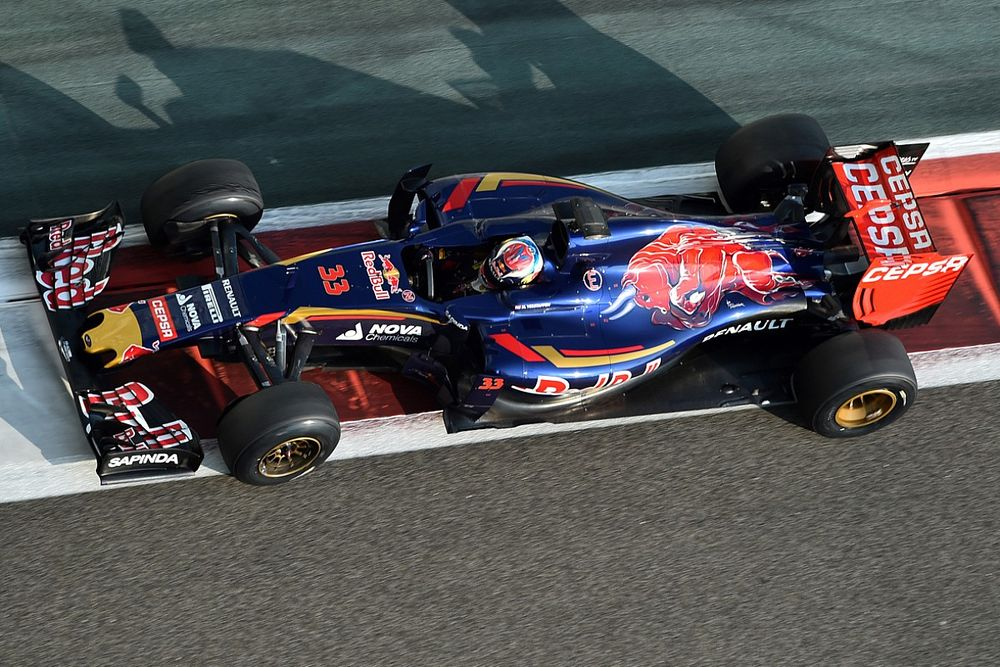

En el Campeonato de Pilotos no todo está dicho para los McLaren, Max Verstappen sigue siendo el motor que pone a Red Bull en el puntero de las clasificaciones. En el Gran Premio de Austin el neerlandés dejó claro que puede lograr una competencia redonda.
Max Verstappen debutó en Fórmula 1 en 2015 con Toro Rosso, siendo el piloto más joven de la historia (17 años).
